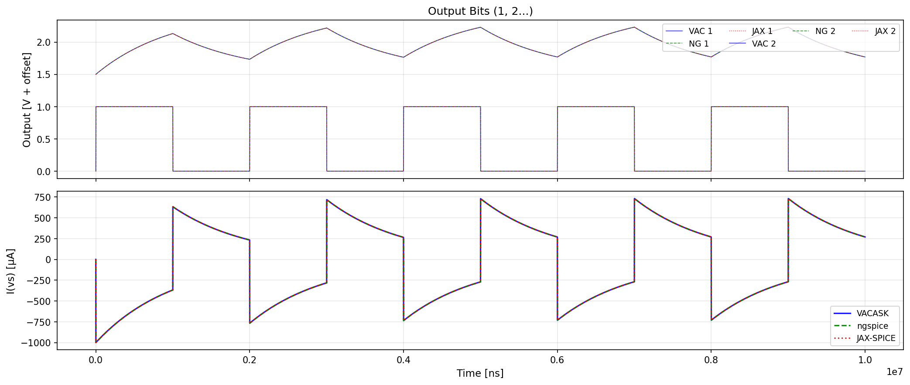
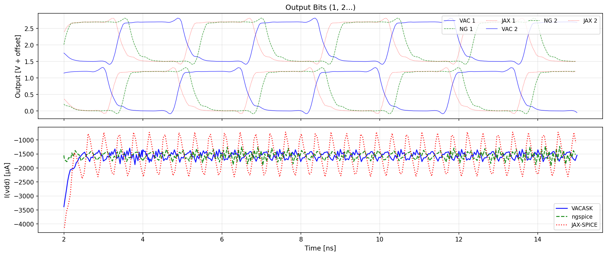

VAJAX: GPU-Accelerated Analog Circuit Simulator¶
A proof-of-concept GPU-accelerated analog circuit simulator built on JAX, demonstrating:
- Automatic differentiation for computing device Jacobians without explicit derivatives
- GPU acceleration for large circuits using JAX's JIT compilation
- Verilog-A model integration via OpenVAF/OSDI bindings for PDK compatibility
- SAX-inspired functional device model API
Current Status¶
VAJAX is in active development as a proof-of-concept. All VACASK benchmark circuits are passing.
CI test results and benchmarks
Validation: Three-Way Comparison¶
VAJAX results are validated against VACASK (reference simulator) and ngspice. All simulators use identical netlists and device models (PSP103 MOSFETs via OSDI).
RC Low-Pass Filter¶
Simple RC circuit demonstrating basic transient behavior. VAJAX matches VACASK and ngspice exactly.

PSP103 Ring Oscillator¶
7-stage ring oscillator with production PSP103 MOSFET models. Shows excellent agreement in oscillation frequency and waveform shape.

C6288 16-bit Multiplier¶
Large-scale benchmark with ~86,000 nodes. Uses sparse solver for memory efficiency. Demonstrates VAJAX scaling to production-sized circuits.

Performance¶
VAJAX is designed for GPU acceleration of large circuits. The table below shows per-step timing against VACASK (C++ reference simulator) on CI runners.
CPU Performance (vs VACASK)¶
| Benchmark | Nodes | Steps | JAX (ms/step) | VACASK (ms/step) | Ratio | RMS Error |
|---|---|---|---|---|---|---|
| rc | 4 | 1M | 0.012 | 0.002 | 6.6x | 0.00% |
| graetz | 6 | 1M | 0.020 | 0.004 | 5.4x | 0.00% |
| mul | 8 | 500k | 0.041 | 0.004 | 10.9x | 0.00% |
| ring | 47 | 20k | 0.511 | 0.109 | 4.7x | - |
| c6288 | ~5000 | 1k | 88.060 | 76.390 | 1.2x | 2.01% |
GPU Performance¶
| Benchmark | Nodes | JAX GPU (ms/step) | JAX CPU (ms/step) | GPU Speedup | vs VACASK CPU |
|---|---|---|---|---|---|
| c6288 | ~5000 | 19.81 | 88.06 | 4.4x | 2.9x faster |
| ring | 47 | 1.49 | 0.51 | 0.3x | below threshold |
| rc | 4 | 0.24 | 0.01 | 0.05x | below threshold |
See Performance Analysis for the full overhead breakdown.
Quick Start¶
# Install with uv (recommended)
uv sync
# Run tests
uv sync --extra test
JAX_PLATFORMS=cpu uv run pytest tests/ -v
# Run a benchmark
JAX_PLATFORMS=cpu uv run vajax benchmark ring
Installation Options¶
# CPU only (default)
uv sync
# With CUDA 12 support (Linux)
uv sync --extra cuda12
# With SAX integration
uv sync --extra sax
Architecture Overview¶
vajax/
├── analysis/ # Circuit solvers and analysis engines
│ ├── engine.py # CircuitEngine - main simulation API
│ ├── solver.py # Newton-Raphson with lax.while_loop
│ ├── transient/ # Transient analysis (scan/loop strategies)
│ ├── ac.py # AC small-signal analysis
│ ├── noise.py # Noise analysis
│ ├── hb.py # Harmonic balance
│ ├── xfer.py # Transfer function (DCINC, DCXF, ACXF)
│ ├── corners.py # PVT corner analysis
│ ├── homotopy.py # Convergence aids (GMIN, source stepping)
│ └── sparse.py # JAX sparse matrix operations (BCOO/BCSR)
│
├── devices/ # Device models
│ ├── vsource.py # Voltage/current source waveforms
│ └── verilog_a.py # OpenVAF Verilog-A wrapper
│
├── netlist/ # Circuit representation
│ ├── parser.py # VACASK netlist parser
│ └── circuit.py # Circuit data structures
│
└── benchmarks/ # Benchmark infrastructure
├── registry.py # Auto-discovery of benchmarks
└── runner.py # VACASK benchmark runner
See Architecture Overview for the full design documentation.
Documentation¶
User Guide¶
- API Reference - CircuitEngine, result types, I/O
- CLI Reference - Command-line interface
- Transient Options - Transient analysis configuration
- Performance Analysis - Overhead breakdown
- VACASK Sim Format - Circuit file format
Developer Guide¶
- Architecture Overview - System design
- GPU Solver Architecture - Solver internals
- GPU Solver Jacobian - Jacobian computation
- Debug Tools - Debugging utilities
- OSDI Inputs - OpenVAF integration